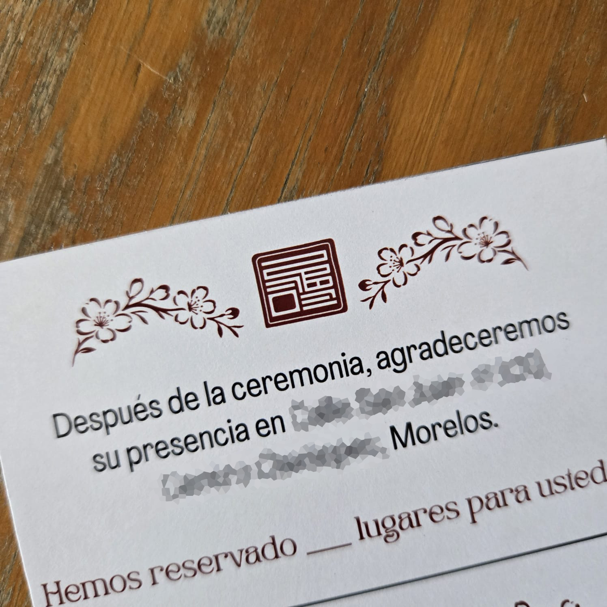
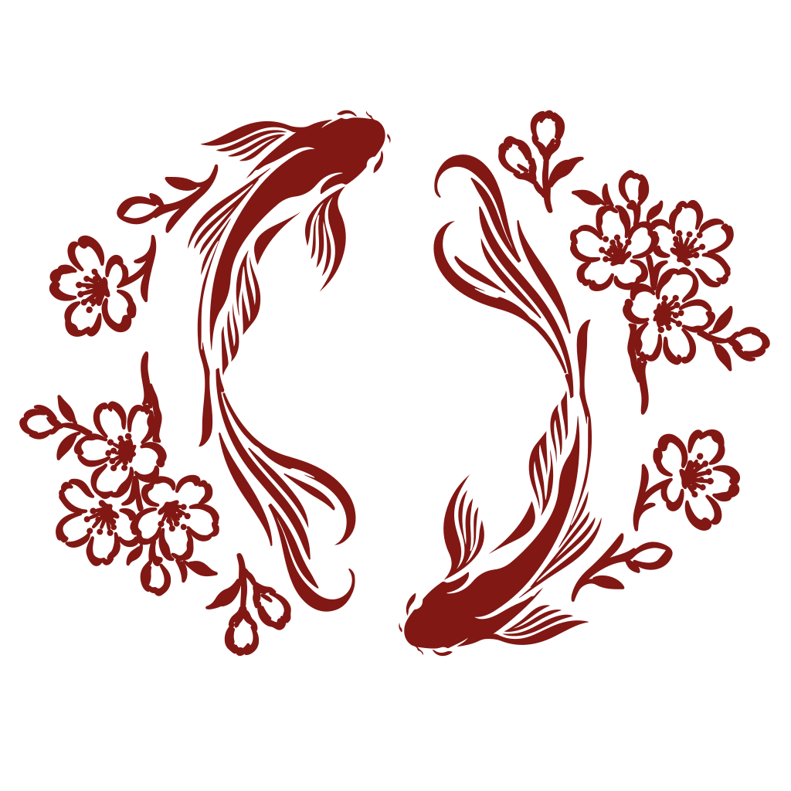

Context
[Add celebration context]

[YEAR]
Context
[Add the celebration context and explain the need that prompted the visual system.]

Condensed brief
[Add celebration context]
[Define the identity objective]
[Explain the guiding concept]
[List the designed applications]
[Detail participation and responsibilities]
Guiding concept
[Explain how the concept becomes forms, symbols, and graphic resources.]


Identity construction
Working photographs documenting the exploration of names, ornaments, and invitation structure.



Visual system
[Document the palette, typography, variations, and combination rules.]


Applications
[List the approved applications once the final scope is confirmed.]

Result
[Describe the final outcome once the pieces and scope are approved.]